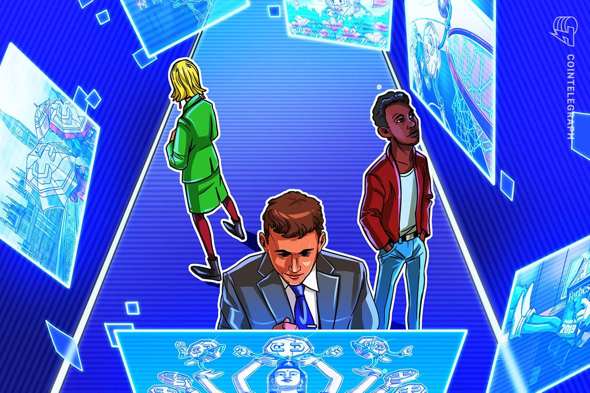
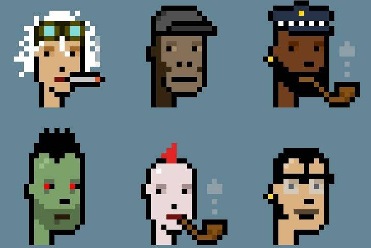

Os NFT’s (non-fungible tokens) são tokens que possuem uma assinatura única e própria, ou seja, não é possível que exista ou seja criado um ou mais itens iguais ao original, sendo assim amplamente utilizados no mundo artístico, como uma nova maneira de criar novos tipos de arte. As NFT’s podem ser negociadas por plataformas online que geralmente utilizam criptomoedas como forma de pagamento.
O primeiro NFT foi criado em 2014 pelo artista americano Kevin McCoy e pelo empresário Anil Dash com o objetivo de ser exibido no Museu de Arte Contemporânea de Nova Iorque, que é famoso por ser um palco para ideias de integração da arte e da tecnologia. Ao criar o projeto, McCoy pensou em implementar uma fonte de renda extra aos artistas e também um controle maior sobre a posse e uso de sua arte. As NFT’s, além de arte, podem ser consideradas como uma vertente de diversificação para investimentos com alta taxa de risco, já que não há um padrão para a valorização ou a desvalorização da mesma.
